Guam Travel Guide
U.S. territory in the Western Pacific Ocean, known for its tropical beaches, rich Chamorro culture, and vibrant marine life.
Top Locations
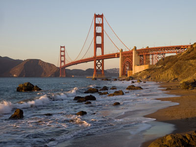
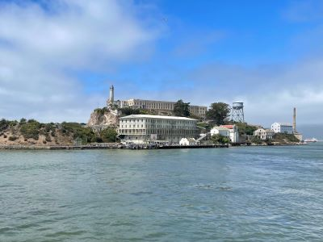
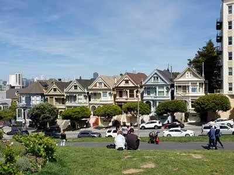
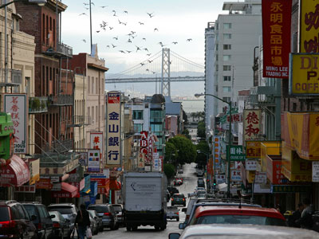
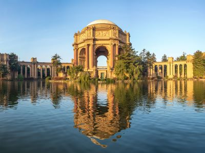
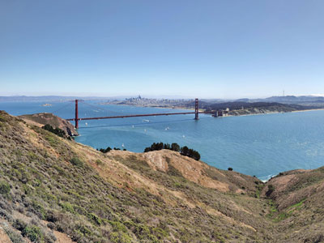
-400.jpg)

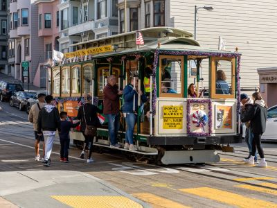
Places to See in Guam

Dough4872, CC BY-SA 4.0, via Wikimedia Commons; Image Size Adjusted

Aquarium of Guam
Marine attraction featuring underwater tunnels and ocean life exhibits
Dough4872, CC BY-SA 4.0, via Wikimedia Commons; Image Size Adjusted
Cetti Bay Overlook
Scenic viewpoint overlooking lush valleys and coastline
Dough4872, CC BY-SA 4.0, via Wikimedia Commons; Image Size Adjusted
Cetti Bay
Remote bay surrounded by jungle and tropical waters
Dough4872, CC BY-SA 4.0, via Wikimedia Commons; Image Size Adjusted
Chamorro Village
Cultural marketplace featuring local food and crafts
Dough4872, CC BY-SA 4.0, via Wikimedia Commons; Image Size Adjusted
Cocos Island
Tropical island destination known for snorkeling and beaches
Dough4872, CC BY-SA 4.0, via Wikimedia Commons; Image Size Adjusted
Dusit Place
Shopping and entertainment complex in the Tumon tourist district
Dough4872, CC BY-SA 4.0, via Wikimedia Commons; Image Size Adjusted
Fish Eye Marine Park
Underwater observatory offering views of coral reefs and tropical fish
Dough4872, CC BY-SA 4.0, via Wikimedia Commons; Image Size Adjusted
Fort Nuestra Senora de la Soledad
Historic Spanish colonial fort ruins overlooking the southern coast
Dough4872, CC BY-SA 4.0, via Wikimedia Commons; Image Size Adjusted
Fujita Beach
Quiet beach with clear waters and scenic coastal surroundings
Dough4872, CC BY-SA 4.0, via Wikimedia Commons; Image Size Adjusted
Gab Gab Beach
Sheltered beach known for excellent snorkeling and calm lagoon waters
Dough4872, CC BY-SA 4.0, via Wikimedia Commons; Image Size Adjusted
Gef Pago
Traditional CHamoru cultural village showcasing ancestral island life
Dough4872, CC BY-SA 4.0, via Wikimedia Commons; Image Size Adjusted
Guam Museum
Museum exploring Guam's history, CHamoru culture, and Pacific heritage
Dough4872, CC BY-SA 4.0, via Wikimedia Commons; Image Size Adjusted
Inarajan Natural Pool
Naturally formed tidal pool enclosed by a lava rock barrier along the southern shore
Dough4872, CC BY-SA 4.0, via Wikimedia Commons; Image Size Adjusted
Merizo Pier
Historic pier in the southern village of Merizo with views of Cocos Island
Dough4872, CC BY-SA 4.0, via Wikimedia Commons; Image Size Adjusted
Mount Lamlam Summit
Highest point on Guam with sweeping views of the island and Pacific Ocean
Dough4872, CC BY-SA 4.0, via Wikimedia Commons; Image Size Adjusted
Mushroom Rock Hilaan Beach
Distinctive mushroom-shaped limestone formation rising from a scenic beach
Dough4872, CC BY-SA 4.0, via Wikimedia Commons; Image Size Adjusted
One Thousand Steps
Cliffside stairway descending to a secluded beach popular with divers
Dough4872, CC BY-SA 4.0, via Wikimedia Commons; Image Size Adjusted
Pagat Cave
Ancient CHamoru village site featuring a limestone cave and freshwater pool
Dough4872, CC BY-SA 4.0, via Wikimedia Commons; Image Size Adjusted
Paseo de Susana
Waterfront park in Hagatna with harbor views and open green space
Dough4872, CC BY-SA 4.0, via Wikimedia Commons; Image Size Adjusted
Piti Bomb Holes
Underwater WWII bomb craters now teeming with marine life and coral
Dough4872, CC BY-SA 4.0, via Wikimedia Commons; Image Size Adjusted
Plaza de Espana
Historic Spanish colonial plaza in Hagatna featuring government buildings and gardens
Dough4872, CC BY-SA 4.0, via Wikimedia Commons; Image Size Adjusted
Ritidian Point
National wildlife refuge at Guam's northern tip with pristine beach and jungle trails
Dough4872, CC BY-SA 4.0, via Wikimedia Commons; Image Size Adjusted
Surf Side Beach
Beach known for its waves and relaxed coastal atmosphere
Dough4872, CC BY-SA 4.0, via Wikimedia Commons; Image Size Adjusted
T Galleria
Duty-free luxury shopping complex in Tumon Bay
Dough4872, CC BY-SA 4.0, via Wikimedia Commons; Image Size Adjusted
Talofofo Caves
Natural limestone cave system in the Talofofo River valley
Dough4872, CC BY-SA 4.0, via Wikimedia Commons; Image Size Adjusted
Talofofo Falls
Scenic waterfall surrounded by tropical jungle in southeastern Guam
Dough4872, CC BY-SA 4.0, via Wikimedia Commons; Image Size Adjusted
Tumon
Guam's main tourist district featuring resorts, shops, and Tumon Bay
Dough4872, CC BY-SA 4.0, via Wikimedia Commons; Image Size Adjusted
Tumon Beach
Central beach in Tumon Bay lined with hotels and calm turquoise waters
Dough4872, CC BY-SA 4.0, via Wikimedia Commons; Image Size Adjusted
Two Lovers Point
Cliffside lookout with panoramic ocean views and local legend
Dough4872, CC BY-SA 4.0, via Wikimedia Commons; Image Size Adjusted
Valle Esmeralda de Carice Flores
Lush jungle valley with tropical flora and scenic natural landscapes
Dough4872, CC BY-SA 4.0, via Wikimedia Commons; Image Size Adjusted
War in the Pacific National Historical Park
National park preserving WWII battle sites and honoring those who fought in the Pacific
Dough4872, CC BY-SA 4.0, via Wikimedia Commons; Image Size Adjusted
Ypao Beach
Popular beach park with calm waters and picnic areas
Overview
Guam is the largest and southernmost of the Mariana Islands, a U.S. territory of about 170,000 people in the western Pacific, roughly 3,800 miles west of Hawaii. Hagåtña (Agana) is the capital, Dededo is the most populous village, and the island is the homeland of the CHamoru people, whose culture still shapes daily life.
Visitors come for the beaches and snorkeling of Tumon Bay, the cliffs of Two Lovers Point, and the history of the Pacific War. Others come for the Wednesday-night market at Chamorro Village, the Spanish colonial Plaza de España, waterfalls, the Cocos Island lagoon, and shopping, diving, and red rice at a CHamoru fiesta. English and CHamoru are both official languages.
Geography
Guam is 30 miles long and 4 to 12 miles wide, with a different character in each half. The north is a flat limestone plateau with sheer cliffs, caves, and beaches, while the south is volcanic hills, rivers, and waterfalls, with Mount Lamlam, at 1,332 feet (406 m), the highest point. Coral reefs ring much of the island, and the nearby Mariana Trench contains the deepest known point in the ocean. The island has a tropical marine climate.
History
The ancestors of the CHamoru arrived about 4,000 years ago, and they built latte stone houses. Ferdinand Magellan stopped at Guam in 1521, and Spain colonized the island in 1668, ruling it for more than 200 years. The United States took Guam after the Spanish-American War in 1898, and Japan invaded on December 8, 1941, occupying it until U.S. forces recaptured it on July 21, 1944, now celebrated as Liberation Day. Under the Organic Act of 1950, Guamanians became U.S. citizens, and the military remains a major presence.
National Protected Areas
War in the Pacific National Historical Park is Guam's national park site, and it preserves World War II battle sites, caves, and coastal guns at several units around the island. Guam National Wildlife Refuge protects forest and reef habitat at Ritidian Point, where visitors can see limestone cliffs and nesting sea turtles. These areas hold much of the island's native wildlife, including species at risk from invasive snakes.
Territorial Parks and Historic Sites
Territorial sites include Fort Nuestra Señora de la Soledad, a Spanish fort above Umatac, and Talofofo Falls and Inarajan Natural Pool in the south. Pagat Cave has ancient CHamoru artifacts, Piti Bomb Holes is a popular dive and snorkel spot, and the Guam Museum in Hagåtña shows island history and culture. Cetti Bay Overlook is a good place to see the southern coast.
Seasons and When to Visit
Guam's dry season runs from December to June, with lower humidity and calmer seas, and is the most popular time to visit. The wet season, from July to November, brings heavy rain and is typhoon season, although storms can occur at any time of the year. Liberation Day on July 21 is celebrated with parades and fiestas, and the Guam Micronesia Island Fair is held in May. Flights connect from Japan, Korea, the Philippines, and Honolulu.
This article uses material from the Wikipedia article "Guam", which is released under the Creative Commons Attribution-Share-Alike License 3.0. Additional information was drawn from National Park Service, Guampedia, and Guam Visitors Bureau.
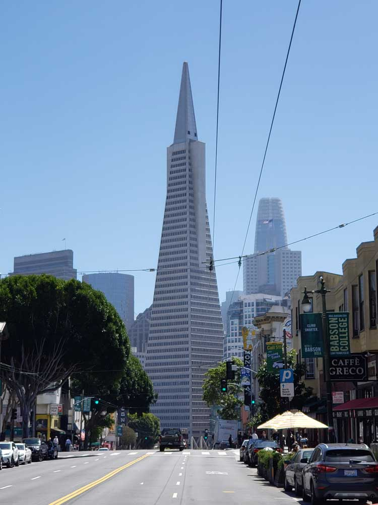
Transamerica Pyramid Building
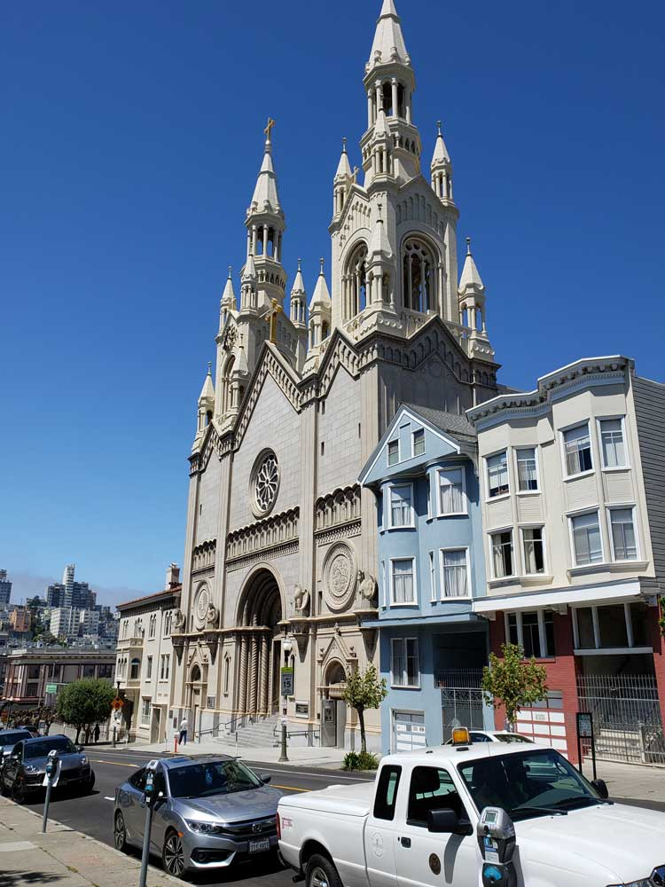
Saints Peter And Paul Church
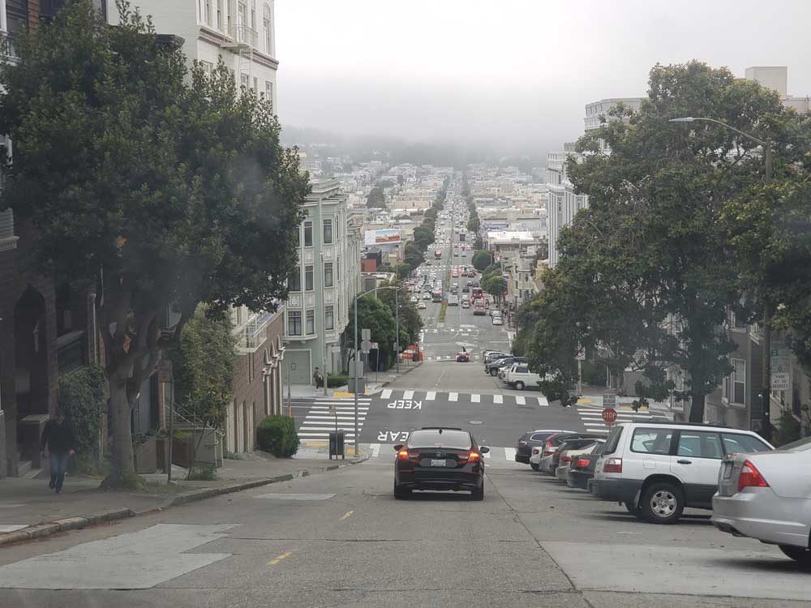
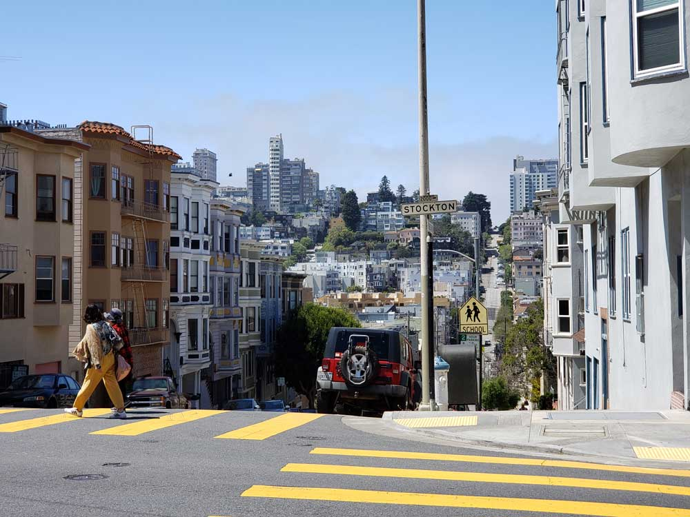